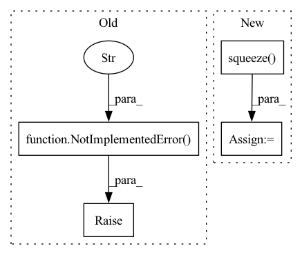

Pattern ID :34266
Before Change
mean: Tensor,
cov: Tensor,
kwargs: Dict[str, Tensor]) -> Tuple[Tensor, Tensor]:
raise NotImplementedError("TODO" )
def predict(self, mean: Tensor, cov: Tensor, kwargs: Dict[str, Tensor]) -> Tuple[Tensor, Tensor]:
raise NotImplementedError("TODO")
After Change
mean: Tensor,
cov: Tensor,
kwargs: Dict[str, Tensor]) -> Tuple[Tensor, Tensor]:
measured_mean = (kwargs["H"] @ mean.unsqueeze(-1)).squeeze( -1)
resid = input - measured_mean
new_mean = mean + (kwargs["K"] @ resid.unsqueeze(-1)).squeeze(-1)
new_cov = torch.zeros_like(cov)
return new_mean, new_covIn pattern: SUPERPATTERN
Frequency: 3
Non-data size: 4
Instances Fragment ID: 98253695
Project Name: strongio/torchcast
Commit Name: 8210da6ee85f13f07cdbd7b237b9abc6ad07be3b
Time: 2021-06-18
Author: jacob.dink@strong.io
File Name: torchcast/exp_smooth/exp_smooth.py
M Class Name: ExpSmoothStep
N Class Name: ExpSmoothStep
M Method Name: _update(5)
N Method Name: _update(5)
M Parent Class: StateSpaceStep
N Parent Class: StateSpaceStep
M File Name: torchcast/exp_smooth/exp_smooth.py
N File Name: torchcast/exp_smooth/exp_smooth.py
M Start Line: 45
M End Line: 45
N Start Line: 40
N End Line: 44
Before Change
if assignment is None:
if self.training:
raise ValueError("assignment is required.")
raise NotImplementedError("Sorry, I haven"t implemented..." )
else:
threshold_weight = threshold_weight.view(batch_size, 1, F_bin*T_bin)
assignment = assignment.view(batch_size, n_sources, F_bin*T_bin) // -> (batch_size, n_sources, F_bin*T_bin)
assignment = threshold_weight * assignmentAfter Change
if assignment is None:
if self.training:
raise ValueError("assignment is required.")
latent_kmeans = latent.squeeze(dim=0) // -> (embed_dim, F_bin*T_bin)
latent_kmeans = latent_kmeans.permute(1,0) // -> (F_bin*T_bin, embed_dim)
kmeans = Kmeans(latent_kmeans, K=n_sources)
_, centroids = kmeans(iteration=10) // (F_bin*T_bin, n_sources), (n_sources, embed_dim)
attractor = centroids.unsqueeze(dim=0) // (batch_size, n_sources, embed_dim) Fragment ID: 98253693
Project Name: tky823/dnn-based_source_separation
Commit Name: 91997b7bd606d76f27dfbf71a7c12938c97e05aa
Time: 2020-09-01
Author: delta9guitar97@gmail.com
File Name: src/models/danet.py
M Class Name: DANet
N Class Name: DANet
M Method Name: extract_latent(4)
N Method Name: extract_latent(4)
M Parent Class: nn.Module
N Parent Class: nn.Module
M File Name: src/models/danet.py
N File Name: src/models/danet.py
M Start Line: 66
M End Line: 72
N Start Line: 63
N End Line: 77
Before Change
raise NotImplementedError("TODO")
def predict(self, mean: Tensor, cov: Tensor, kwargs: Dict[str, Tensor]) -> Tuple[Tensor, Tensor]:
raise NotImplementedError("TODO" )
class ExpSmooth(StateSpaceModel):
After Change
F = kwargs["F"]
K = kwargs["K"]
R = kwargs["R"]
mean = (F @ mean.unsqueeze(-1)).squeeze( -1)
// TODO: cheaper to check cov!=0 before applying FCF"?
cov = F @ cov @ F.permute(0, 2, 1) + K @ R @ K.permute(0, 2, 1)
return mean, cov
Fragment ID: 98253699
Project Name: strongio/torchcast
Commit Name: 8210da6ee85f13f07cdbd7b237b9abc6ad07be3b
Time: 2021-06-18
Author: jacob.dink@strong.io
File Name: torchcast/exp_smooth/exp_smooth.py
M Class Name: ExpSmoothStep
N Class Name: ExpSmoothStep
M Method Name: predict(4)
N Method Name: predict(4)
M Parent Class: StateSpaceStep
N Parent Class: StateSpaceStep
M File Name: torchcast/exp_smooth/exp_smooth.py
N File Name: torchcast/exp_smooth/exp_smooth.py
M Start Line: 48
M End Line: 48
N Start Line: 47
N End Line: 53